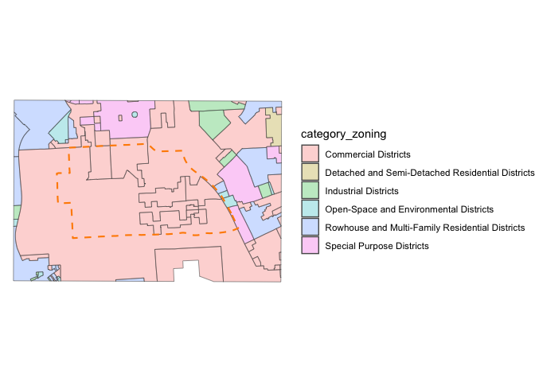
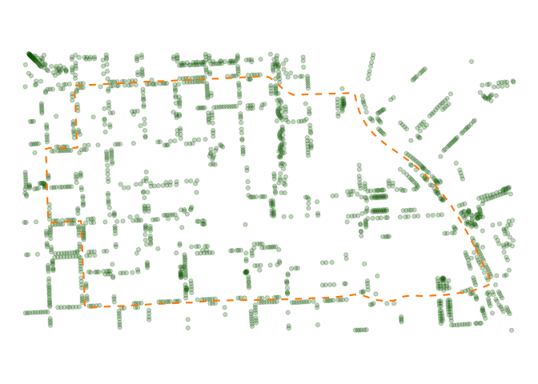

The goal of the mapbaltimore package is to provide an easy way to create maps of Baltimore neighborhoods, Council districts, and other areas using open data on schools, housing, parks, and public transit.
Installation
You can install this development version (including Suggested packages) from GitHub with:
# install.packages("pak")
pak::pkg_install("elipousson/mapbaltimore", dependencies = TRUE)Data and reproducibility
The intent for this package is to always provide the most current version of the included administrative data. If the underlying data is updated on an rolling basis, the corresponding dataset for mapbaltimore will be updated with changes noted in the changelog. If the underlying data is updated less frequently or requires some special review, the older versions may be archived with a year appended to the end of the dataset name.
Package datasets that are currently known to be outdated included:
-
csas: Multiple attribute names are outdated. -
neighborhoods: A new version is now included asneighborhoods_2020 -
police_districts: A new version is now included aspolice_districts_2023
Users are encouraged to flag outdated datasets by opening an issue on the package repository.
Examples
library(sf)
#> Linking to GEOS 3.11.0, GDAL 3.5.3, PROJ 9.1.0; sf_use_s2() is TRUE
library(ggplot2)
library(mapbaltimore)
theme_set(theme_void())mapbaltimore is most useful for convenient access to Baltimore spatial data from neighborhoods to streets to parks.
You can download a neighborhood boundary:
downtown <- get_baltimore_area(
type = "neighborhood",
name = "Downtown"
)
downtown_boundary <- geom_sf(
data = downtown,
color = "darkorange",
fill = NA,
linewidth = 0.75,
linetype = "dashed"
)
dplyr::glimpse(downtown)
#> Rows: 1
#> Columns: 6
#> $ name <chr> "Downtown"
#> $ type <chr> "Residential"
#> $ acres <dbl> 260.7037
#> $ osm_id <chr> "12792276"
#> $ wikidata <chr> "Q3038329"
#> $ geometry <MULTIPOLYGON [m]> MULTIPOLYGON (((-8527684 47...And then use the neighborhood (or another location) to filter data for that area:
downtown_streets <- get_area_streets(downtown)
downtown_map <- ggplot() +
geom_sf(data = downtown_streets, color = "gray70") +
downtown_boundaryThe package datasets are typically based on official city or state sources but have been updated to remove outdated information and incorporate related information. For example, the parks data includes alternate names and OpenStreetMap identifiers:
downtown_parks <- getdata::get_location_data(downtown, data = parks)zoning data has been labelled and categorized based on the city zoning code:
downtown_zoning <- getdata::get_location_data(downtown, data = zoning, dist = 500, unit = "m")
ggplot() +
geom_sf(data = downtown_zoning, aes(fill = category_zoning), alpha = 0.3) +
downtown_boundary
The package includes a few bundled GeoPackage files with data on trees, vegetated areas, and unimproved properties. It also includes functions for caching even larger datasets with edge of pavement geometry, parcel boundaries, and street centerline data for the Baltimore metro area.
downtown_trees <- getdata::get_location_data(downtown, data = "trees", package = "mapbaltimore", dist = 100, unit = "m")
ggplot() +
geom_sf(data = downtown_trees, color = "darkgreen", alpha = 0.25) +
downtown_boundary
Note, while the code for this package is released under an MIT license, the data is a mix of public domain and CC0 sources.
Required packages
mapbaltimore relies on a several other non-CRAN packages that I am actively developing. I split off many of the mapping and data access functions originally created for mapbaltimore into three more general packages that are imported by mapbaltimore:
The package uses my fork of the esri2sf R package to access city and state FeatureLayers for building permit data, crime data, and 311 service requests and other data sources.
Related packages
Baltimore and Maryland data packages
After starting the mapbaltimore package in 2020, I’ve created two additional data packages:
- bcpss: Tabular and spatial data from the Baltimore City School system.
- mapmaryland: Statewide spatial data from the U.S. Census Bureau and other sources along with data access functions for working with the Maryland Open Data portal and Maryland iMap service.
- baltimorecensus: Data downloaded with the tigris package.
Inspirational packages
The development of mapbaltimore was inspired in part by a handful of other “place-based” R packages for cities:
At the national level, tigris provides access to boundary data for all geographies used by the U.S. Census Bureau. mapbaltimore uses tigris to download all of the U.S. Census geographies that are included with the package.
Outside the U.S., there are similar packages that provide access to varied boundary data for Brazil geobr, Uruguay geouy, Chile chilemapas and Mexico mxmaps.